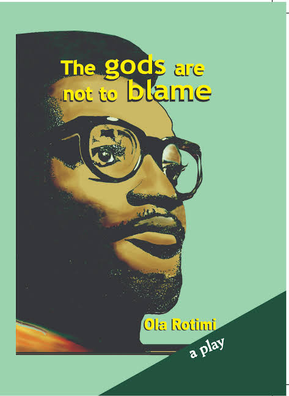

My Favorites
Hover over a cover (or tap it) to flip it and read about the book.
Nearly All the Men in Lagos Are Mad
Twelve short stories about love, dating and marriage in Lagos. Funny, bold and very honest.
Ali Baba and the Forty Thieves
A poor woodcutter finds a thieves' secret cave and a magic password. Clever Morgiana saves the day.
Finding Me
Viola Davis tells the story of growing up in hardship and finding her voice and her purpose.
Becoming
Michelle Obama's memoir, from her childhood in Chicago to her years as First Lady.
The Light We Carry
Michelle Obama shares the habits and lessons that help her stay steady in uncertain times.

The Gods Are Not to Blame
Ola Rotimi's play retells the story of Oedipus in a Yoruba kingdom, where a king's fate catches up with him.
| Title | Author | Genre |
|---|---|---|
| Nearly All the Men in Lagos Are Mad | Damilare Kuku | Literary fiction (short stories) |
| Ali Baba and the Forty Thieves | Folk tale (One Thousand and One Nights) | Folk tale / fantasy |
| Finding Me | Viola Davis | Memoir |
| Becoming | Michelle Obama | Memoir |
| The Light We Carry | Michelle Obama | Non-fiction (self-help) |
| The Gods Are Not to Blame | Ola Rotimi | Play (drama) |
Recommended by Visitors
Books people have sent me through the recommend page:
Books I Want to Read
- Americanah by Chimamanda Ngozi Adichie
- Things Fall Apart by Chinua Achebe
How I Pick a Book
- Read the back cover
- Read the first page
- Ask a friend